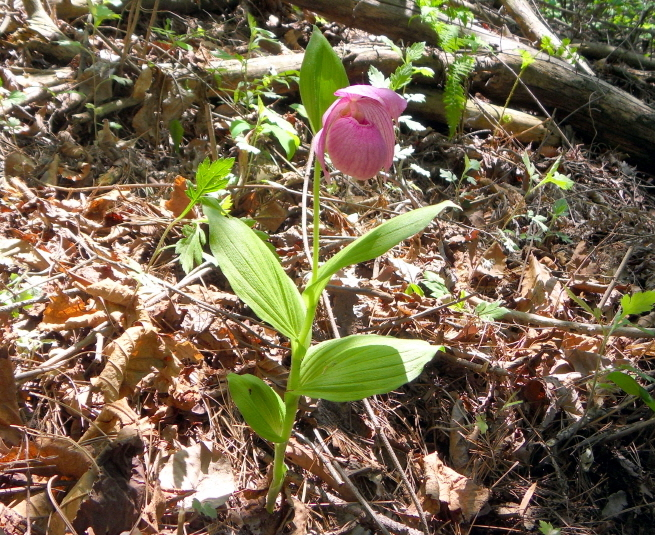

복주머니란

주요특징 및 설명
종명: 복주머니란
학명: Cypripedium macranthum
생물학적 분류: 난초과
분포: 한국·중국·일본
등급: 멸종위기종 Ⅱ급
높이: 30~50cm
주요 특징
복주머니란 꽃은 붉은색 또는 흰색으로 피며, 마치 항아리와 같은 모양으로 달려 이름 붙여졌다. 개화기는 5~6월이다. 주로 숲 속의 반그늘이나 양지쪽의 낙엽수 아래에서 자란다.